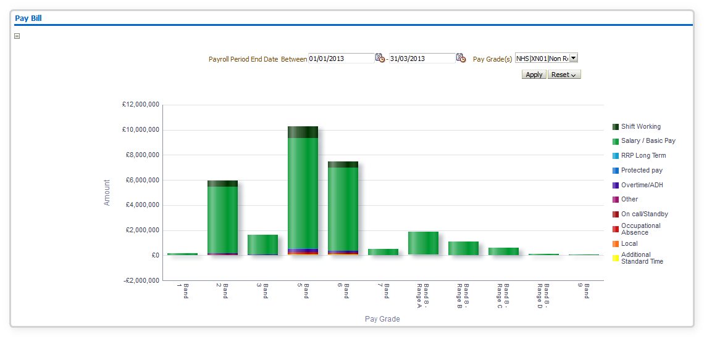
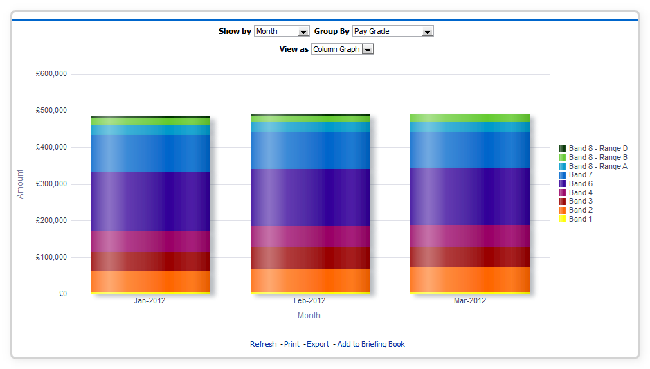

Pay Bill Dashboard
Description
This dashboard is designed to provide users with intelligence on the pay bill of their workforce. The figures included in this dashboard are defined in the same way as the ‘NHS HR Dashboard – Pay Bill’ report available from Discoverer.
Allocation
This dashboard will be allocated to the following URPs:
XXX Administrator Self Service (Payroll Approvals Not Required)
XXX Administrator Self Service (Payroll Approvals Required)
XXX Business Intelligence Administration
XXX Finance Reporting
XXX Finance Reporting and Hub Mapping
XXX Manager Self Service (Payroll Approvals Not Required)
XXX Manager Self Service (Payroll Approvals Required)
XXX Payroll Administration
XXX Payroll Audit
XXX Payroll Super Administration
XXX Pensions Administration
XXX Supervisor Self Service
XXX Supervisor Self Service (Limited Access)
Overview Tab
Prompts
Organisation
Organisation
Pay Grade(s) (Default: All AfC)
Person Type(s) (Default: All)
Employee Person Type(s)
Employee Category
Assignment Category
Month From (Default Today – 3 Months)
Month To (Default Last Month)
Organisation Level 1-13
Location
Pay Bill Summary
Description
This analysis shows the pay bill by summing the cost of each assignment and grouping by element group and AfC Pay Band. By default this analysis will display data from the previous 3 months, however prompts are provided to enable the user to vary this. The figures included in this analysis are defined in the same way as the ‘NHS HR Dashboard – Pay Bill’ report available from Discoverer.
Data Items
| Title | Description |
|---|---|
| Pay Grade | Bands, (Band 8 split into relevant types) |
| Amount | Sum (Pay Values of assignments in Pay Band) |
| DoH Element Group | Nationally determined grouping of pay elements |
Prompts
The user is able to select which pay grades are included. By default this includes AfC only, however the user is able to add in others if required.
Filters
-
DoH Element Group Code is in: APA;AST;B;BASIC;BS;CEA;DA;DP;DPHS;GA;L;O;OA;OC;OT;PP;RRPG;RRPL;SW
-
Staff Group = ‘Medical and Dental’ AND FTE <= 1.2 OR Staff Group NOT ‘Medical and Dental’ and FTE between 0.05 and 1.00
-
Restricted to date period in parameters.
Example Screenshot

Actions
Click->Drill
Total Monthly Pay Bill
Description
This analysis is designed to show a simple total pay bill grouped by month for the organisation. This analysis should be zoomed in to the range of the chart, giving users the ability to see changes more easily. The figures included in this analysis are defined in the same way as the ‘NHS HR Dashboard – Pay Bill’ report available from Discoverer.
Data Items
| Title | Description |
|---|---|
| Date | Month / Year |
| Cost | The amount paid as a total per month |
Filters
-
DoH Element Group Code is in: APA;AST;B;BASIC;BS;CEA;DA;DP;DPHS;GA;L;O;OA;OC;OT;PP;RRPG;RRPL;SW
-
Staff Group = ‘Medical and Dental’ AND FTE <= 1.2 OR Staff Group NOT ‘Medical and Dental’ and FTE between 0.05 and 1.00
-
Restricted to date period in parameters.
Example Screenshot

Monthly Pay Bill
Description
This analysis shows the monthly pay bill grouped by either pay band or element group displayed as a stacked area graph. The figures included in this analysis are defined in the same way as the ‘NHS HR Dashboard – Pay Bill’ report available from Discoverer.
Data Items
| Title | Description |
|---|---|
| Date | Month / Year |
| Cost | The amount paid for each element group |
| DoH Element Group | Nationally determined grouping of pay elements |
| Pay Band | Name of the pay band |
Column Selectors
Group By DoH Element Group or Pay Band (Default Pay Band).
Filters
-
DoH Element Group Code is in: APA;AST;B;BASIC;BS;CEA;DA;DP;DPHS;GA;L;O;OA;OC;OT;PP;RRPG;RRPL;SW
-
Staff Group = ‘Medical and Dental’ AND FTE <= 1.2 OR Staff Group NOT ‘Medical and Dental’ and FTE between 0.05 and 1.00
-
Restricted to date period in parameters.
Example Screenshot

Actions
Click data or heading -> Drill:
DoH Element Group -> Element Names